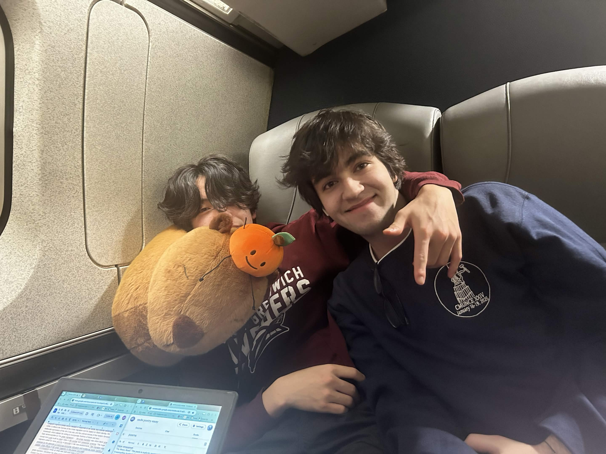
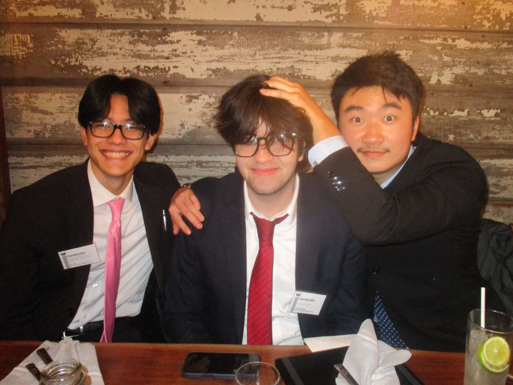

Programming
- Java
- JavaScript
- Python
- C#
I’ve also worked with data analysis, machine learning fundamentals, and training models.
ABOUT ME
I’m a computer science student at UMass Amherst. I like working through problems and figuring out how things work.
Outside of studying, I spend time with friends and family.
In my free time, I enjoy music, chess, reading, and travel. I also play on UMass Amherst’s varsity Valorant team.


MY TOOLKIT
I’ve also worked with data analysis, machine learning fundamentals, and training models.
Research, student leadership, and team competition have given me plenty of practice working with others and solving problems together.